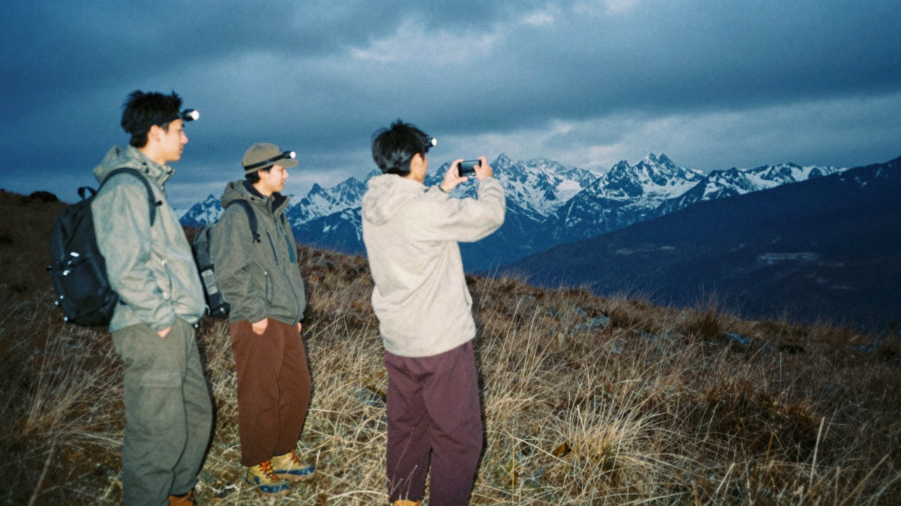
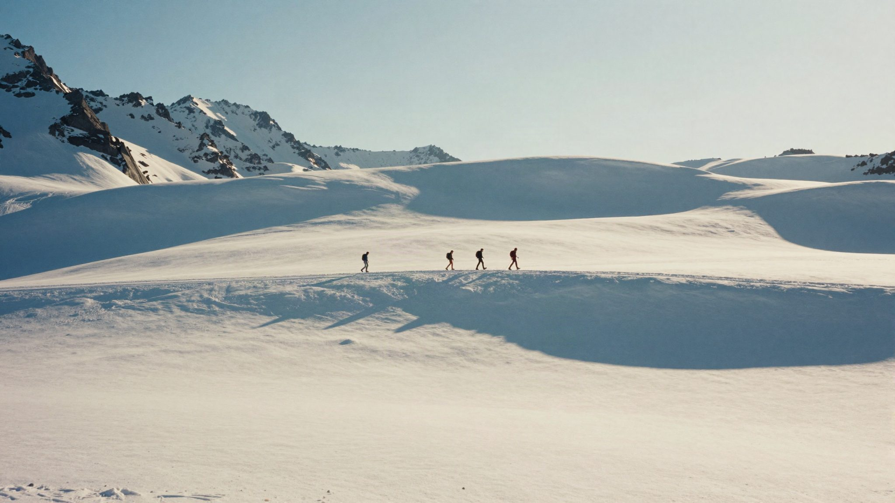

A viewfinder for the recce. Frame the shot, read the light, and come home with the shot list.
Start a project and you are straight in the camera. Step through your lenses and take the still. Frame lines for 2.39, 1.85, 16:9 and 4:3 sit ready over the picture.

Drag the time along the scale and watch the sun cross the frame. Its path is drawn over the picture, golden hour is marked, and the shadows follow.
Out & Scout knows which way the camera faced. Through the day it tells you when the shot is backlit, side lit or front lit, and the best time to be there.
Hold it upright for vertical work. The viewfinder, the frame lines and the shutter all follow the phone.
Change a lens, add a note, drag the shots into shooting order. Then export detailed cards, a one-page summary or just the frames, as a PDF for the director and the gaffer.
Detailed cards with the frame, the light and the best time to be there. A one-page summary for the call sheet. Or just the frames. Ready to send before you are back at the car.